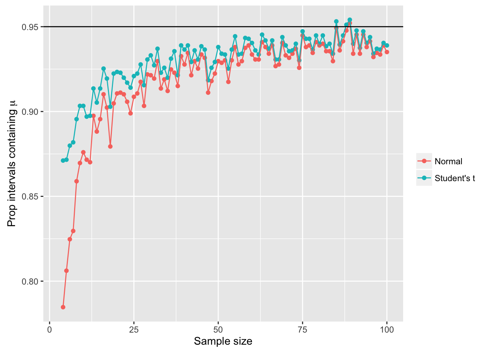

POL S/CS&SS 501, University of Washington, Winter 2016
$$ \DeclareMathOperator{\mean}{mean} \DeclareMathOperator{\var}{var} \DeclareMathOperator{\E}{E} \DeclareMathOperator{\MSE}{MSE} \DeclareMathOperator{\Bias}{Bias} \DeclareMathOperator{\SE}{se} \DeclareMathOperator{\SD}{sd} \DeclareMathOperator{\argmin}{argmin} \DeclareMathOperator{\argmax}{argmax} $$Confidence Intervals of the Mean
Jeffrey Arnold
2016-02-04
This lesson explores the intuition behind confidence intervals using sampling. It also explores what happens to confidence intervals of the mean when its assumptions are not met.
This lesson uses these R packages.
library("dplyr")
library("ggplot2")
library("tidyr")Confidence Intervals
Choose a confidence level of the confidence interval
confidence <- 95
mu <- 0
sigma <- 1iter = 500
# calculate z critical value
alpha <- 1 - (confidence / 100)
z <- -qnorm(alpha / 2)
results <- list()
for (i in 1:iter) {
x <- rnorm(n, mean = mu, sd = sigma)
x_mean <- mean(x)
se <- sigma / sqrt(n)
lb <- x_mean - z * se
ub <- x_mean + z * se
contains_mu <- (mu > lb) & (mu < ub)
results[[i]] <- data_frame(x_mean = x_mean,
se = se,
lb = lb,
ub = ub,
contains_mu = contains_mu,
i = i)
}## Error in rnorm(n, mean = mu, sd = sigma): invalid argumentsresults <- bind_rows(results)How many of these intervals contain the population mean, \(\mu\)?
summarize(results, prop_contain_mu = sum(contains_mu) / n())## Source: local data frame [0 x 0]ggplot(results, aes(y = x_mean, ymin = lb, ymax = ub, x = i, color = contains_mu)) +
geom_hline(yintercept = 0) +
geom_pointrange(size = rel(0.25)) +
coord_flip() +
scale_color_manual(values = c("TRUE" = alpha("black", 0.67), "FALSE" = "red")) +
theme_bw() +
theme(axis.text.y = element_blank(),
axis.ticks.y = element_blank(),
axis.title.y = element_blank())## Error in eval(expr, envir, enclos): object 'x_mean' not found
Note that the confidence intervals (\(\bar{x}\)) are different in each sample.
The “confidence” in the confidence interval is not the probability that future samples have confidence intervals contain sample mean of the current probability interval. If we calculate this for all the confidence intervals we can check this. For a 95% confidence interval the proportion of confidence intervals containing the sample mean of the current sample will vary by sample, but on average will be somewhere around 88%.
contains_x_mean <- rep(NA, nrow(results))
for (i in 1:nrow(results)) {
x_mean_i <- results[i, ][["x_mean"]]
contains_x_mean[i] <-
(sum(results$lb < x_mean_i & results$ub > x_mean_i) - 1) / (nrow(results) - 1)
}
summary(contains_x_mean)## Min. 1st Qu. Median Mean 3rd Qu. Max.
## 1 1 1 1 1 1Unknown standard deviation
Choose a confidence level of the confidence interval
confidence <- 95
n <- 30
mu <- 0
sigma <- 1
iter = 500# calculate z critical value
alpha <- 1 - (confidence / 100)
# crit_val <- -qnorm(alpha / 2)
crit_val <- -qt(alpha / 2, df = n - 1)
results <- list()
for (i in 1:iter) {
x <- rnorm(n, mean = mu, sd = sigma)
x_mean <- mean(x)
s <- sd(x)
se <- s / sqrt(n)
lb <- x_mean - z * se
ub <- x_mean + z * se
contains_mu <- (mu > lb) & (mu < ub)
results[[i]] <- data_frame(x_mean = x_mean,
s = s,
se = se,
lb = lb,
ub = ub,
contains_mu = contains_mu,
i = i)
}
results <- bind_rows(results)How many of these intervals contain the population mean, \(\mu\)?
summarize(results, prop_contain_mu = sum(contains_mu) / n())## Source: local data frame [1 x 1]
##
## prop_contain_mu
## (dbl)
## 1 0.936ggplot(results, aes(y = x_mean, ymin = lb, ymax = ub, x = i, color = contains_mu)) +
geom_hline(yintercept = 0) +
geom_pointrange(size = rel(0.25)) +
coord_flip() +
scale_color_manual(values = c("TRUE" = alpha("black", 0.67), "FALSE" = "red")) +
theme_bw() +
theme(axis.text.y = element_blank(),
axis.ticks.y = element_blank(),
axis.title.y = element_blank())The sample standard deviations themselves have a sampling distribution.
ggplot(results, aes(x = s)) +
geom_density() +
geom_rug()The Student’s t distribution is used for hypothesis testing and confidence intervals instead of the normal distribution in order to account for the uncertainty due to estimating the population standard deviation from the sample standard deviation.
One recommendation is to only use normal distribution quantiles for the critical values for sample sizes over 30 and if the distribution is not too skewed.
confidence <- 95
mu <- 0
sigma <- 1
iter = 2048
sample_sizes <- 3:100
# calculate z critical value
alpha <- 1 - (confidence / 100)
results <- list()
for (i in seq_along(sample_sizes)) {
n <- sample_sizes[i]
norm_critical_value <- -qnorm(alpha / 2)
t_critical_value <- -qt(alpha / 2, df = n - 1)
norm_contains_mu <- rep(NA, iter)
t_contains_mu <- rep(NA, iter)
for (j in 1:iter) {
# Sample from the normal distribution
x <- rnorm(n, mean = mu, sd = sigma)
x_mean <- mean(x)
s <- sd(x)
se <- s / sqrt(n)
z <- (x_mean - mu) / se
norm_contains_mu[j] <- abs(z) < norm_critical_value
t_contains_mu[j] <- abs(z) < t_critical_value
}
results[[i]] <-
data_frame(n = n,
`Normal` = sum(norm_contains_mu) / iter,
`Student's t` = sum(t_contains_mu) / iter)
}
results <- bind_rows(results) %>%
gather(se_type, contains_mu, -n)ggplot(results, aes(x = n, y = contains_mu, color = se_type)) +
geom_point() +
geom_line() +
geom_hline(yintercept = 1 - alpha) +
xlab("Sample size") +
ylab(expression(paste("Prop intervals containing ", mu))) +
scale_color_discrete("")Skewed distribution
What if the sample is from a skewed population distribution such as the geometric distribution? A geometric distribution with \(p = 0.25\) is right skewed,
confidence <- 95
prob <- 0.1
iter = 2048
sample_sizes <- 3:100
# mean of geom is (1 - p) / p
mu <- (1 - prob) / prob
alpha <- 1 - (confidence / 100)
results <- list()
for (i in seq_along(sample_sizes)) {
n <- sample_sizes[i]
norm_critical_value <- -qnorm(alpha / 2)
t_critical_value <- -qt(alpha / 2, df = n - 1)
norm_contains_mu <- rep(NA, iter)
t_contains_mu <- rep(NA, iter)
for (j in 1:iter) {
x <- rgeom(n, prob = prob)
x_mean <- mean(x)
s <- sd(x)
se <- s / sqrt(n)
z <- (x_mean - mu) / se
norm_contains_mu[j] <- abs(z) < norm_critical_value
t_contains_mu[j] <- abs(z) < t_critical_value
}
results[[i]] <-
data_frame(n = n,
`Normal` = sum(norm_contains_mu) / iter,
`Student's t` = sum(t_contains_mu) / iter)
}
results <- bind_rows(results) %>%
gather(se_type, contains_mu, -n)ggplot(results, aes(x = n, y = contains_mu, color = se_type)) +
geom_point() +
geom_line() +
geom_hline(yintercept = 1 - alpha) +
xlab("Sample size") +
ylab(expression(paste("Prop intervals containing ", mu))) +
scale_color_discrete("")## Warning: Removed 2 rows containing missing values (geom_point).## Warning: Removed 2 rows containing missing values (geom_path).
If a less than C% of a C% confidence interval contain the true value of the parameter, are the confidence intervals too narrow or too wide?
Miscellaneous
- What if the population is finite? How does that affect confidence intervals and standard errors?
- What if observations are not independent? Consider examples with clustering or autoregression.
Common misinterpretations of confidence intervals
Suppose you have a treatment that you suspect may alter performance on a certain task. You compare the means of your control and experimental groups (say 20 subjects in each sample). Further, suppose you use a simple independent means t-test and your result is significant (t = 2.7, d.f. = 18, p = 0.01). Please mark each of the statements below as “true” or “false.” “False” means that the statement does not follow logically from the above premises. Also note that several or none of the statements may be correct (between the population means) (From Hoekstra et al. 2014. “Robust Misinterpretation of Confidence Intervals.” Psychological Bulletin Review)
- The probability that the true mean is greater than 0 is at least 95%
- The probability that the true mean equals 0 is smaller than 5%.
- The “null hypothesis” that the true mean equals 0 is likely to be incorrect
- There is a 95% probability that the true mean lies between 0.1 and 0.4
- If we were to repeat the experiment over and over, then 95% of the time the true mean falls between 0.1 and 0.4.
- If we were to repeat the experiment over and over then 95% of the confidence intervals would contain the sample mean of 0.25.
All of these are false. The correct interpretation is:
The confidence interval was generated using a method so that in repeated samples, 95% of the samples the confidence interval will contain the true mean.

This work is licensed under a Creative Commons Attribution-NonCommercial-ShareAlike 4.0 International License. R code is licensed under a BSD 2-clause license.